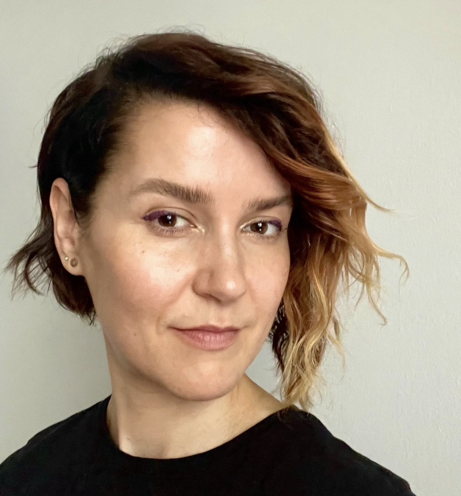

About
A decade at the intersection of communication, operations, and execution — in the places where clarity matters most and is hardest to find.
Background
My background spans creative leadership, founder support, operational strategy, and cross-functional coordination — often in environments where ambiguity, competing priorities, and fast-moving decisions were the norm.
Over the past decade, I’ve worked across startups, agencies, and enterprise-facing teams, consistently drawn to the work underneath the work: clarifying ideas, structuring communication, aligning stakeholders, and helping teams move from complexity toward coherence.
What Drives Me
I tend to work best in environments that require synthesis, adaptability, strategic thinking, and calm execution. I’m most useful when the picture is still forming — when someone needs a thought partner, a system builder, or a steady hand to move things forward.
The through-line across everything I’ve done is simple: I help people and organizations get out of their own way, and into their best work.
What This Has Looked Like
Co-leading a multidisciplinary consultancy
Scaling Mammal — creative strategy, operations, client delivery
Supporting startup founders through Techstars
Program operations, mentor coordination, founder support
Managing multi-stakeholder initiatives
Cross-functional alignment across teams, clients, and leadership
Shaping narratives and presentations
Pitches, proposals, strategic decks for major brand engagements
Building operational systems
Cadence, process, infrastructure that scales with the team
Translating abstract goals into executable plans
Turning vision into structure, strategy into motion
“I’m drawn to the moment when a complex, tangled situation starts to resolve — when the right question gets asked, the right frame gets found, and things begin to move.”
Work Together
Whether you’re a founder figuring out what’s next, a team that’s grown faster than its systems, or a leader who needs a thought partner — I’d love to hear what you’re working on.
Get in touch →